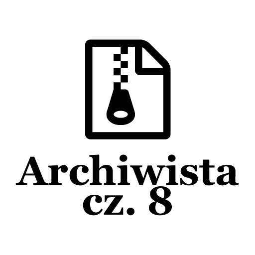

Post archive
Archiwista [cz. 8 - Poprawki]

W tym tygodniu skupiłem się głównie na doskonaleniu istniejącej funkcjonalności. Pierwszą rzeczą, jaką zrobiłem, było przerobienie Managera w taki sposób, aby istniała możliwość zwrócenia skrótów. Dodatkowo podczas wyboru ścieżki dostępu do pliku ".sln" tekst był wyrównany do lewej strony. Zmieniłem, aby był wyrównywany do prawej. Dzięki temu jesteśmy świadomi, czy wybraliśmy odpowiedni plik bez konieczności przewijania w prawo.
Skróty
Skróty klawiszowe są jedną z kluczowych funkcjonalności aplikacji, dlatego chcę aby działały najlepiej jak to tylko możliwe. Jako, że nagrywanie skrótu klawiszowego może trwać nieokreśloną ilość czasu w tym miejscu użyję metody asynchronicznej. Podczas poszukiwań natknąłem się na informację, która zrewolucjonizowała metodę nagrywania skrótów. Istnieje możliwość zwrócenia wartości z metody asynchronicznej zwracającej Task, poprzez zastosowanie typu generycznego Task<TResult>. Takim sposobem powstała nowa metoda RecordKeyboardShortcut, która wygląda następująco:
public async Task<KeyboardShortcut> RecordKeyboardShortcut()
{
_IsRecording = true;
// While recording wait for user to press key combination
while (_IsRecording)
{
// Wait for user
await Task.Delay(100);
}
// Return new Shortcut;
return _RecordedShortcut;
}Reszta mechanizmu nagrywania nie zmieniła się od ostatniego wpisu. Ustawiana jest flaga informująca o tym, że nagrywany jest nowy skrót. Kiedy użytkownik zwolni klawisz zostanie on zapisany jako nowa kombinacja klawiszy. Aby cały proces odbył się poprawnie zaistniała potrzeba zawieszenia metody poprzez użycie pętli while. Pętla ta czeka co jakiś czas, aby nie zajmować czasu procesora ciągłym jej wywoływaniem. Jako, że całość wykonuje się asynchronicznie nagrywanie skrótu zakończy się kiedy flaga zostanie ustawiona na false - czyli skrót został nagrany. Następnie pętla przestanie się wykonywać i zwróci nagrany skrót.
Nagrywanie przykładowego skrótu klawiszowego można zobaczyć na kodzie załączonym poniżej. Pierwszą rzeczą, która jest robiona to odłączenie aktualnego skrótu klawiszowego z listy. Następnie nagrywany jest nowy skrót i ustawiany event OnShortcutActivated. Posiadając już przygotowany skrót pozostaje dodanie go do listy skrótów.
private async void RecordBackupShortcut()
{
// Clear old Shortcut from manager
KeyboardShortcutManager.Instance.UnregisterKeyboardShortcut(BackupShortcut);
//Record new shortcut and attach CreateBackup method
BackupShortcut = await KeyboardShortcutManager.Instance.RecordKeyboardShortcut();
BackupShortcut.OnShortcutActivated += CreateBackup;
// Register new Shortcut
// TODO: save new Shortcut into user settings
KeyboardShortcutManager.Instance.RegisterKeyboardShortcut(BackupShortcut);
}Wyrównanie do prawej
Podczas wyboru ścieżki do pliku ".sln" zawartość pola tekstowego była wyrównana do lewej strony. Przez to prawa część zawierająca nazwę pliku, która bardziej nas interesuje, była ucięta. Rozwiązaniem okazało się zrobienie AttachedProperty. Jest to własna opcja, którą możemy ustawić w dowolnym elemencie graficznym. Aby wyrównać zawartość pola do prawej strony stworzyłem ScrollToEndProperty. Niestety na samym początku nie wyglądało to za dobrze. Ponieważ metoda ScrollToEnd nie działała tak, jak przewidywałem. Okazało się, że aby metoda zadziałała, należy ustawić Focus na obiekcie, który chcemy przewinąć. Następnie należy przesunąć kursor na koniec tekstu i dopiero wtedy metoda ScrollToEnd przewinie do prawej strony zawartość pola tekstowego.
public class ScrollToEndProperty : BaseAttachedProperty<ScrollToEndProperty, bool>
{
public override void OnValueChanged(DependencyObject sender, DependencyPropertyChangedEventArgs e)
{
if (!(sender is TextBox textbox))
return;
textbox.TextChanged -= ScrollToEnd;
textbox.TextChanged += ScrollToEnd;
}
private void ScrollToEnd(object sender, TextChangedEventArgs e)
{
if (!(sender is TextBox box))
return;
box.Focus();
box.CaretIndex = box.Text.Length;
box.ScrollToEnd();
}
}Kończąc
Mechanizm nagrywania nowych skrótów działa tak jak tego chciałem. Etap prac nad tym elementem uznaję za zamknięty. Poprawiłem sposób wyświetlania informacji w polu tekstowym reprezentującym ścieżkę do plików. W przyszłości zbuduję komponent pozwalający na pobranie ścieżki do pliku lub folderu. Aktualnie istnieją trzy takie wpisy i w każdym z nich musiałem dodać nowy parametr wyrównujący tekst do prawej strony. Co jest błędem, docelowo powinno się to zrobić w jednym miejscu i zmiana powinna być widoczna wszędzie.
[KodNaGit]